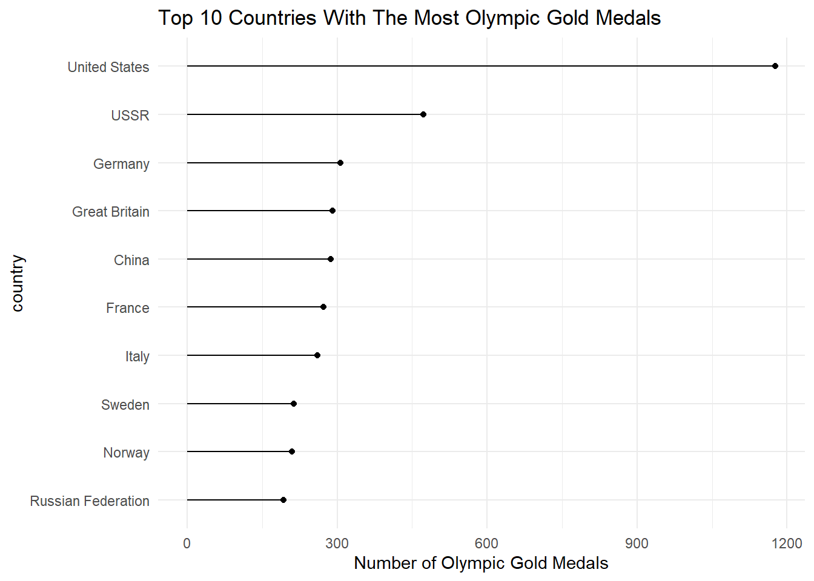
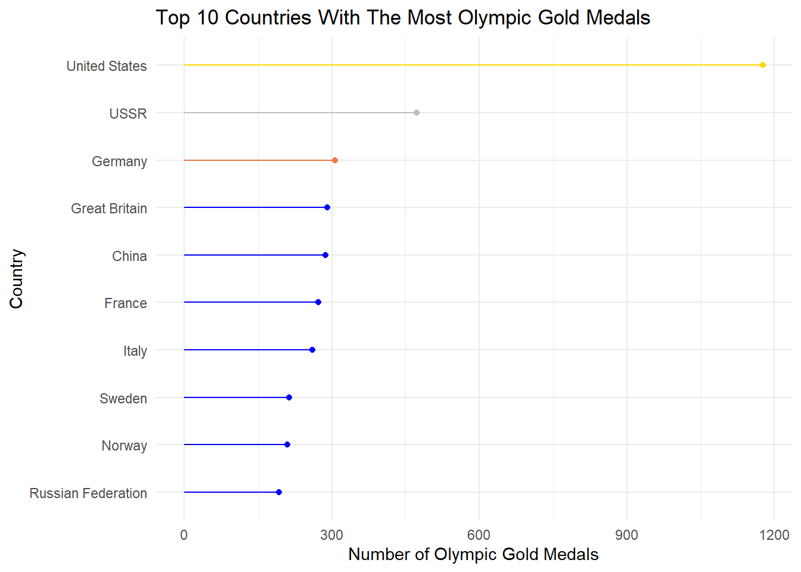
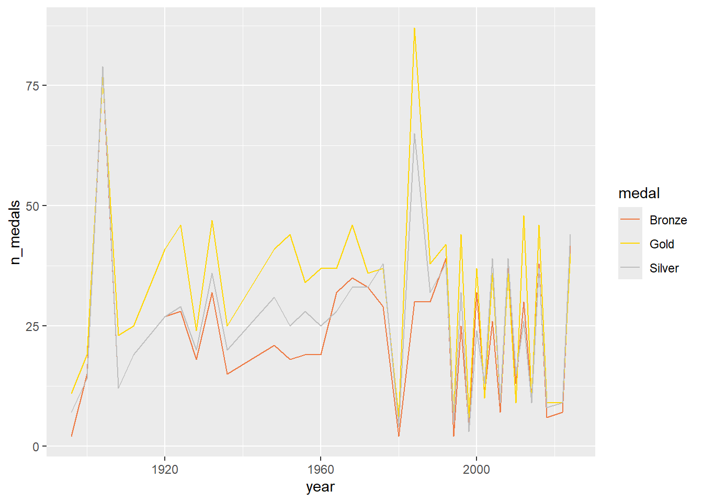

The Olympic Games. Every two years, (most of) the world’s countries opt to set aside their domestic and international conflicts and send some of their most talented athletes overseas and over mountains to show off for around two or three weeks in hopes of bringing back a shiny gold medal or two… or two hundred.
Lots and lots of events going on, and so little time to watch them all… So for this blog post, I have decided to satisfy my patriotic duty by dedicating a whole post to showcasing the USA’s totally undebatable athletic superiority.
Rows: 20247 Columns: 10
── Column specification ────────────────────────────────────────────────────────
Delimiter: ","
chr (9): season, medal, country_code, country, athletes, games, sport, event...
dbl (1): year
ℹ Use `spec()` to retrieve the full column specification for this data.
ℹ Specify the column types or set `show_col_types = FALSE` to quiet this message.
There are a whopping 20,247 entries in this dataset, presumably covering every person who has ever medalled since the very first Olympic Games in 1896. In every sport. The dataset covers 10 variable columns, varying in helpfulness. The ones I am most interested in are:
season (winter or summer) and year held.
The country where the medallist is from.
The type of medal (bronze, silver, gold) earned.
The games variable which describes the year and location of the event.
The event_gender (“Men’s”, “Women’s”, or “Mixed”)
And the sport and event_name, which describe the overall “type” of sport, and the “subevent”, respectively. Ex// “swimming” and “100m freestyle”.
Tidying
Right off the bat, there’s some things I want to change about this data. Firstly, I want to turn the games variable into the host_city variable, because we already have a year variable.
library(dplyr)
Attaching package: 'dplyr'
The following objects are masked from 'package:stats':
filter, lag
The following objects are masked from 'package:base':
intersect, setdiff, setequal, union
I also want to have a column for the host_country. After much fiddling, I found that the ‘maps’ package we’ve used in the past also contains a ‘cities’ dataframe that should have the countries that those cities are located in, so I will now attempt to join these two datasets.
library(maps)
Warning: package 'maps' was built under R version 4.4.3
#data("world.cities")#world.cities <- world.cities#olympics_df_tidy <- left_join(olympics_df_tidy, world.cities, join_by(host_city == name))#olympics_df_tidy <- olympics_df_tidy %>%#filter(!is.na(season)) # to remove cities/countries that never hosted the # olympics#head(olympics_df_tidy)
Primary Visualizations
Okay, so after much fiddling, I could simply not figure out how to connect the host_cities to their countries for my beautiful mapping plans. I just kept creating larger and larger datasets. At one point I think I had about 20 million cases and I do NOT want to crash my computer, so. We will forego the map for now. But someday. Someday I will make a world map of all the gold medals we have won.
Let’s make a lollipop plot instead, of the countries with the top 10 number of gold medals.
library(forcats)library(ggplot2)
Warning: package 'ggplot2' was built under R version 4.4.3
gold_top_10 <- olympics_df_tidy %>%filter(medal =="Gold") %>%group_by(country) %>%summarize(n_gold =n() ) %>%slice_max(n_gold, n =10) %>%mutate(country =fct_reorder(country, n_gold) )ggplot(data = gold_top_10, aes(x=n_gold, y = country)) +geom_segment(aes(yend = country, x =0, xend = n_gold, show.legend =FALSE)) +geom_point(show.legend =FALSE) +theme_minimal() +labs(x ="Number of Olympic Gold Medals", title ="Top 10 Countries With The Most Olympic Gold Medals")
Warning in geom_segment(aes(yend = country, x = 0, xend = n_gold, show.legend =
FALSE)): Ignoring unknown aesthetics: show.legend

I would like to change the colors of the top 3 lines to reflect the gold, silver, and bronze “gold-medal earning” medals of these top 3 teams. For this, I will use a case_when argument, and give the top 3 “medallist” countries their very own character levels that I can use to assign colors.
gold_top_10 <- gold_top_10 %>%mutate(place =case_when(n_gold ==1177~1, n_gold ==473~2, n_gold ==307~3, n_gold <307~4),place =factor(place) )ggplot(data = gold_top_10, aes(x=n_gold, y = country, color = place, show.legend =FALSE)) +geom_segment(aes(yend = country, x =0, xend = n_gold), show.legend =FALSE) +geom_point(show.legend =FALSE) +theme_minimal() +scale_color_manual(values =c("gold","gray", "sienna2","blue")) +labs(x ="Number of Olympic Gold Medals", title ="Top 10 Countries With The Most Olympic Gold Medals", y ="Country")

Gorgeous. Almost gorgeous enough to make me forget about my map.
Here we see that, with the data in the dataframe, the U.S. far surpasses its runner-up, the defunct USSR as well as its progeny, the Russian Federation. It has about 3 times as many golds as the next most successful active olympic competitor, Germany. In times of global and domestic turmoil, I suppose it is nice to find these little reasons to be patriotic.
I think I also want to make a line map showing the number of each medal type the U.S. has earned over the years. This will give us an idea of the breakdown of our athletes’ successes across the years.
`summarise()` has grouped output by 'year'. You can override using the
`.groups` argument.
ggplot(data = medals_US, aes(x = year, y = n_medals, color = medal)) +geom_line() +scale_color_manual(values =c("sienna2","gold", "gray"))

There are some nitpicks with this graph. If I had more time and knowledge, I would like to expand the ‘year’ axis to make it less cramped. There also appears to be some odd, uncharacteristic “spikiness” in the data around the 2000s. It is worth investigating the cause of that, such as the number of events held in those years. But that is a question for a future blog post.
For now, I am satisfied with these two visualizations.
Connection to Class
Well I tried to do some mapping, and I like to think I got pretty close a couple times. I did discover that ‘cities’ dataset within the ‘maps’ package, which I hope to someday be able to incorporate into the ’worlddata” dataset within the same package. I did learn a lot about the join_* functions, and in general what not to do when trying to join two very large dataframes.
Other than that, I think this analysis provided some more quality review of dplyr. I made some good use of the summarize() function to create my plots. I am especially proud of the solution I came up with for coloring the top 3 countries in my lollipop plot, creating a kind of “fake” variable for and 1st, 2nd, 3rd places as well as something to code the rest of the countries as.
I definitely hope to do some more work with this dataset in the future.